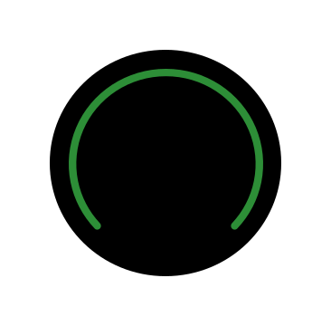

<ion-content>
  <ion-icon class="menu-icon" name="reorder-three-outline" routerLink="/home"></ion-icon>
  <div class="card-container">
    
 
  <ion-row >
  <ion-col size="12" class="logo" >
    <div class="img-container">
      
    <div class="centrado">{{minutos}}:{{segundos}}</div>
    </div>
  </ion-col>
</ion-row>


  </div>
  <div class="task-container">

  <ion-button shape="round">
     Tarea de prueba 1
   </ion-button>

  
  </div>
  <div class="session-type">{{sesionInfo}}</div>
  <div class="player-container">
    <ion-row>
      <ion-col size="4" >
        <ion-icon [ngClass]="{'oculto': started === false}" class="player-icon"  (click)="resetTimer()" name="stop-circle-outline"></ion-icon>
      </ion-col>
      <ion-col size="4" *ngIf="paused === true">
      <ion-icon class="player-icon"  (click)="startTimer()" name="play-circle-outline"></ion-icon>
      </ion-col>
      <ion-col size="4" *ngIf="paused === false && started === true">
        <ion-icon class="player-icon"  (click)="pauseTimer()" name="pause-circle-outline"></ion-icon>
      </ion-col>

      <ion-col size="4" >
        <ion-icon class="player-icon" name="play-skip-forward-circle-outline" (click)="changeCycle()"></ion-icon>
      </ion-col>
      
    </ion-row>
  </div>
  <div class="session-message">{{mensajeSesiones}}</div>
</ion-content>